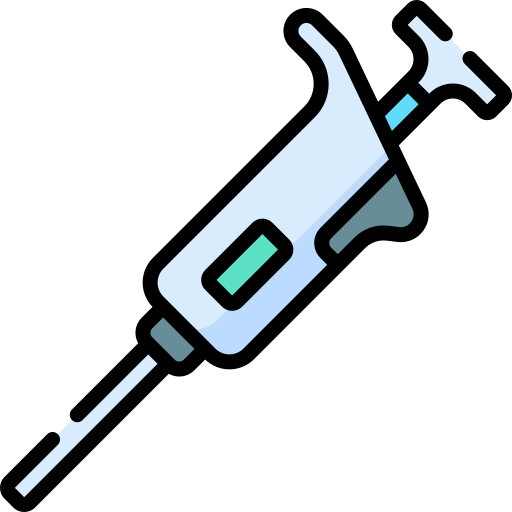
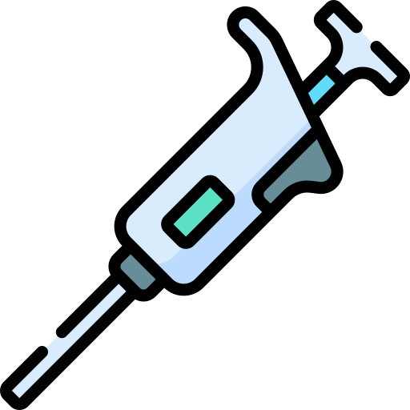

In the modern dynamic consumer market, product compliance, reliability, and safety are now top issues for manufacturers, retailers, and consumers. Our full-range testing services deliver the essential quality assurance to introduce safe, long-lasting, and compliant products to the market, and establish consumer confidence and defend brand reputation.

Customer protection needs stronger monitoring for product safety at the same time as standards for performance need assessment. Both safety standards and customer demands about product quality and reliability must be met by all retail items before market entry. Our assessment services support developers to reach market success by finding essential faults within products before production causes substantial financial losses.Stafford supporting detailed testing performs an essential function in product innovation advancement and environment sustainability development in retail products. Our enhanced examination capabilities assist producers to enhance product quality while sustaining environmental duty thus fulfilling market demands for sustainable superior products.
Our testing methods follow the most demanding standards present in worldwide and European Consumer Products Testing in the UK safety and quality assurance systems. Our organization maintains UKAS (United Kingdom Accreditation Service) accreditation to execute testing procedures that comply with BS EN ISO/IEC 17025:2017 therefore ensuring both technical competency and testing reliability. Our laboratories remain actively involved in British Standards Institution technical committees to help develop and improve testing standards that define the path of Consumer Products Testing in the UK t safety into the future.
The core elements of our testing framework follow all essential consumer rights as established in the UK Consumer Rights Act and the General Product Safety Regulations. We keep our testing procedures in line with the Office for Product Safety and Standards (OPSS) guidelines to meet the current consumer protection standards. We assist manufacturers through complete regulatory compliance support by delivering interpretation and implementation services for the Toys (Safety) Regulations 2011 as well as the Electrical Equipment (Safety) Regulations 2016.
The General Product Safety Regulations 2005 implemented Directive 2002/96/EC on general product Similar. This guidance is for businesses placing products on the market in NI and the UK. It will assist your understanding of the regulations and includes obligations for manufacturers and their authorized representatives, importers, distributors, fulfilment service providers and the providers of online marketplaces.
The regulations require all Consumer Products Testing in the UK within scope to be safe and applies whether they are new, used, repaired or reconditioned. Evaluation of whether a product is safe includes considering aspects of it such as its characteristics, design, technical features, composition, packaging, commands for assembly and installation, use and maintenance. The General Product Safety Regulations 2006 continue to try in Great Britain.


We provide specialized testing services for every segment of consumer products since our capabilities adapt to individual market needs. Labs within our personal care and hygiene sector perform advanced chemical investigations and safety evaluations of materials and end products to satisfy requirements of both the Cosmetic Products Enforcement Regulations 2013 and European standards. We provide analyses of packaging durability and determine material-performance along with maintaining product integrity over long periods of time.
The household goods and kitchenware sector benefits from our comprehensive understanding of food contact materials regulations and safety requirements. Our testing protocols address both immediate safety concerns and long-term performance characteristics, ensuring products maintain their integrity throughout their intended lifecycle.We use advanced analytical methods to analyze material longevity, chemical movement, and mechanical substance strength across different usage environments to supply manufacturers with absolute security regarding their product reliability.
Our testing services for children's products along with toys adopt distinct evaluation methods that focus on overcoming age-appropriate safety standards and potential risks. The evaluation process consists of mechanical safety examinations alongside chemical composition analyses as well as durability tests to meet the Toys (Safety) Regulations 2011 along with its international standards. The manufacturer uses this detailed method to ensure their final products align with official regulations as well as maintain the requirements for safety and quality standards set by parents.
The testing methodology uses an extensive evaluation system which evaluates various vital features of Consumer Products Testing in the UK. Material characterization stands as our foundational testing approach because we utilize sophisticated analytical methods for chemical identification and substance quantification and possible contamination detection and restricted substance evaluation. Our testing facilities operate GC-MS and ICP-MS machines to produce accurate and trustworthy results.
The evaluation methodology includes essential components for physical and mechanical testing. Our testing facilities utilize modern equipment which determines the durability and impact performance and operational capability in diverse environmental situations. Special tests deliver manufacturers complete performance feedback together with material restrictions that stem from testing under steady temperatures and ultraviolet ray exposure and mechanical challenge testing. The standards establish detailed product assessments because they evaluate both product strength properties and safety characteristics for both furniture pieces and electronic device accessories.
Technical expertise combined with innovation drives us to establish our testing excellence. Our laboratories house both skilled scientists and engineers who possess deep expertise in testing consumer products for regulatory compliance together with testing them for safety. Our quality management system guarantees reliable and consistent results for every test service we provide. Our ongoing investment into both personnel training and technology development enables us to be leaders in testing abilities which lets us handle new product groups and changing safety standards with stability and accuracy.
The plastic components of daily hygiene products including shampoo bottles and soap dispensers as well as toothpaste tubes and hairbrushes and deodorant sticks and razors need complete testing to confirm their safety alongside their durability and usability levels. Testing for these items includes:
- The material integrity standard verifies that plastic components of containers together with applicators maintain their structural quality and prevent chemical leakage toward products which touch the skin.
- Dispensing Mechanism Testing: For items like shampoo bottles or toothpaste tubes, testing focuses on ensuring that the mechanisms used to dispense products function smoothly over time without clogging or leakage.
- The durability of hairbrushes and razor handles under normal and water conditions is tested through thorough examination.
Plastic household products such as cleaning tools, storage containers, trash bags, food containers, and laundry baskets undergo rigorous testing for both strength and performance. For example:
- The strength and resistance of trash bags along with laundry baskets and storage containers to bear loads and impacts form an essential part of testing procedures. Tests are conducted to verify product durability when people use products for retrieving groceries and bulk storage needs.
Functional testing and protective evaluations take place as part of the product assessment for consumer electronics accessories such as mobile phone cases, laptop shells, headphones and remote controls and wire insulation components. Testing includes:
- Impact and Drop Testing: Mobile phone cases and laptop shells undergo drop tests to verify their ability to protect the device from shocks or impacts during accidents.
- Testing headphone housings and remote-control buttons evaluates their resistance under extreme temperatures to prevent deformation and system failure.
- Cable cover inspection with wire insulation tests their capability to minimize electrical risks along with short circuits through reliable functioning under electrical supply and environmental exposure.
A food safety test ensures plastic items used for food contact are free from dangerous substances such as BPA that can damage consumed food products.
- Safety tests check that plastic items contain no toxic elements by establishing their non-toxic properties when in contact with eating items regardless of the absence of harmful substances such as BPA that could pollute food.
- All non-stick cookware coatings undergo tests that evaluate their performance under high cooking temperatures while confirming their ability to resist harmful fume release.
- The resistance to scratching and staining as well as odor retention serves as a test criterion for spatulas and other kitchen tools like cutting boards and mixing bowls.
Safety evaluations and durability assessments run extensively on plastic recreational products including action figures along with puzzles and playground equipment components while inflatable pools also get tested.
- Toxicity and Chemical Safety: Toys are tested to ensure they are free from harmful chemicals like lead, phthalates, and other toxic substances, safeguarding children's health.
- This assessment process verifies the mechanical and structural properties of puzzle pieces along with playground equipment parts to ensure they lack all possible dangerous features.
- Outdoor recreational items including inflatable pools undergo testing for extended sun protection to confirm they resist fading changes and maintenance of their shape and strength.
Specialized testing labs conduct safety and performance checks on athletic equipment components made from plastic which includes helmets along with shoes as well as water bottles and exercise mats and sports gear.
- Protective gear including helmets undergoes severe crash testing for delivering necessary defense in high-risk scenarios involving cycling and contact sports activities.
- Professional tests evaluate both comfort and flexibility of exercise mats and athletic shoes to guarantee their capability to support active users without resulting in injuries.
- The strength along with durability of plastic components in sports equipment undergo tests for ensuring their performance in arduous conditions under repeated usage.
Plastic furnishings along with decorative objects which include chairs and tables and picture frames vases and curtain rings undergo multiple assessment tests for their durability and their esthetic quality and their ability to remain stable:
- Tests for load-bearing capacity check chairs and tables to guarantee their ability to stay stable under heavy weight conditions.
- Standards-based weather and UV radiation tests on outdoor plastic furniture provide a way to determine its endurance against sunlight degradation.
- Tests for decorative items consist of a frame inspection with staining assessment and testing of vase resistance against scratching alongside scratch-resistance examinations for normal use conditions.
The testing process applies to plastic packaging materials which include bottles along with jars and food wraps as well as bubble wrap to verify their protective efficiency and product quality maintenance.
- Bottles and food containers together with jars are subjected to tests that measure their sealing effectiveness against leaks and contamination.
- The ability of packaging materials to shield contents from moisture and air while protecting against light exposure exists as a part of testing.
- The strength and durability of bubble wrap together with plastic films undergo tests for measuring their resistance to puncturing along with their capacity to endure pressure during handling applications and delivery process and warehouse storage cycles.
The performance along with safety measures and durability of plastic stationery which includes pens and staplers rulers and file organizers will receive examination.
- Testing checks ink consistency as well as the writing experience of pens while staplers receive evaluations regarding their ability to perform repeatedly without breaking down.
- Laboratory stress tests examine office file folders and organizers to verify their capacity for day-to-day usage without damage. All testing procedures ensure the designs are able to carry both paper weight and maintain strength during normal use.
- Ergonomics: Office supplies like pens and staplers are evaluated for ease of use, ensuring they are comfortable to hold and operate over extended periods.
The quality assessment of plastic travel and lifestyle products contains strength tests and durability tests and safety tests for suitcase shells and backpacks and sunglasses frames as well as luggage tags.
- The capability of travel bags and backpacks and suitcases to handle travel-related rough-handling is tested through effect and pressure tests.
- Travel products such as backpacks and travel bags receive water resistance tests to maintain protection of contents under different weather situations.
- Plastic components within sunglasses frames and luggage tags undergo testing for both durability and strength to prevent breakage together with deformation under use conditions.
The safety testing together with durability assessment and functionality review takes place for plastic pet accessories such as feeding bowls and toys and litter trays and aquariums.
- The presence of dangerous chemicals in pet toys as well as feeding bowls undergoes testing to determine their non-toxic nature so pets can safely chew and interact with them.
- Manufacturers test pet entertainment options and litter boxes for their ability to resist pet-related damage from bites or scratches and persistent use.
- The testing of aquariums with pet accessories includes evaluation of simple assembly procedures and the functionality which combines with lasting durability characteristics.
Flower pots together with watering cans and outdoor furniture along with gardening tools undergo environmental and durability testing before entering the market.
- Different tests are applied to garden tools along with outdoor furniture to determine their ability to withstand ultraviolet light exposure while resisting weather degradation.
- Product tests for watering cans together with plastic flower pots focus on their strength during pressure tests and impact tolerances as well as durability under outdoor conditions.
- The evaluation of gardening tools including shovels and rakes includes testing for comfort when working long hours alongside assessments to validate their sturdy and ergonomic handles.
The functionality together with durability and comfort of plastic components in fashion items including buttons and zippers as well as shoe soles and waterproof materials receives testing.
- Testing procedures check plastic buttons and zippers and shoe soles for their strength capability to withstand everyday use thereby avoiding failures.
- The evaluation of plastic-made raincoats and waterproof clothing determines their ability to repel moisture during wet conditions.
- Two essential requirements must be met for testing conditions which include suitable fit of clothing and comfortable conditions without causing discomfort to users.
The entire production process of disposable plastic products spans from straws to plates and utensils and plastic bags to determine their operational safety and environmental responsibility.
- The endurance and operational capabilities of disposable plates along with cutlery get specifically tested before meeting production standards.
- Straws alongside plastic bags undergo testing to show their potential for recycling or decomposition and biodegradation which lowers environmental damage.
Performance assessment tests determine the durability aspects of miscellaneous consumer products made from plastic-based materials which include DIY kits and bicycle parts alongside portable storage units.
- The DIY kits undergo successive testing to prove they contain plastic components which easily assemble and sustain structural reliability for extended periods.
- Total real-world durability testing of saddle and handle components ensures their reliable operation for the entire lifespan of the bicycle parts.
Partner with us for testing and experience our complete strategy to ensureConsumer Products Testing in the UK quality. We provide customized services for fast delivery that includes regulatory guidance on complex requirements to benefit our users.. Our testing services deliver required market success tools such as validation and documentation both for launching new product lines and maintaining existing products.
Reach out to our Consumer Products Testing in the UK testing team for immediate evaluation of our advanced testing services which will uphold your market leadership position and fulfill your product quality obligations.


 
